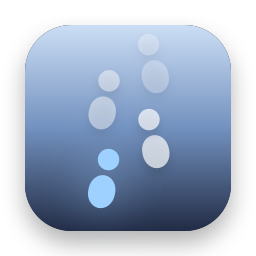
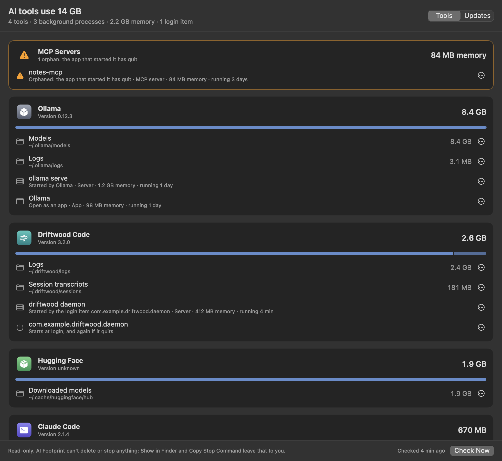

AI Footprint
Models, logs, background servers, MCP servers and login items. See what your AI coding tools leave on your Mac, and what every update changed.
Thanks for downloading! If it helps you find something, a star on GitHub helps other people find it.
free · open source · macos 14+ · read-only · no internet access
What it shows

- On disk: models, caches, logs, transcripts, virtual machines and installed versions for Claude Code, the Claude app, Codex, Ollama, LM Studio and Hugging Face, with the biggest things in each folder.
- Running: each tool's processes, their memory, and what keeps them running: an app, a terminal, a login item, another tool, or nothing at all.
- Orphaned MCP servers: servers still running after the app that started them quit, doing nothing but using memory.
- Login items: what each tool set to start at login or restart whenever it quits.
- Update receipts: when a tool updates or adds a login item, the version change, the disk each folder gained or lost, and the login items that came or went.
Questions
How much disk space do AI coding tools use?
It varies a lot: a few hundred megabytes for a coding assistant's transcripts and logs, several gigabytes for a virtual machine or a bundled runtime, and tens of gigabytes for local models. AI Footprint adds it up per tool and per folder, so you can see where it goes.
Is it a cleaner?
No. It never deletes or stops anything. It shows what's there, Show in Finder takes you to it, and Copy Stop Command gives you the exact command for Terminal, shown before you copy it. Every change is yours to make.
What is an orphaned MCP server?
An MCP server is a small program an AI tool starts to give it extra abilities, like reading files or searching the web. It normally quits with the tool. If the tool crashes or is closed the wrong way, the server can keep running with nothing connected to it. AI Footprint flags those.
How do I see what an update changed?
Leave AI Footprint running. It checks every 15 minutes, and when a tool updates, installs itself, or adds or removes a login item, the menu bar icon gets a dot and Recent Updates has a receipt with what changed.
Can it read my API keys or prompts?
No. It can only read the folders it lists, one by one, with sign-in tokens, keys and settings left out. It measures files without opening them, never saves command-line arguments, and has no internet access. The details are in SECURITY.md, and the code is open source.